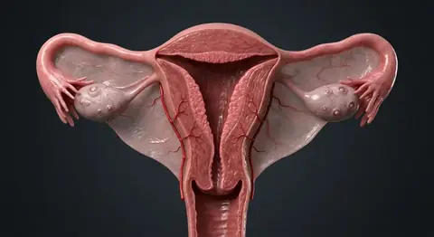

Pleural cavitiesRight hypochondriac regionRight upper quadrant (RUQ)Right lumbar regionRetroperitoneal compartmentRight lower quadrant (RLQ)Right iliac (inguinal) regionIliac crest surface landmarkCranial cavityVertebral canalDorsal body cavitySternal surface landmarkThoracic cavityMediastinumPericardial cavityVentral body cavityThoracic diaphragmEpigastric regionLeft hypochondriac regionLeft upper quadrant (LUQ)Abdominal cavityLeft lumbar regionUmbilical regionParietal and visceral peritoneumLeft lower quadrant (LLQ)Left iliac (inguinal) regionHypogastric (pubic) regionPelvic cavity
Pleural cavitiesRight hypochondriac regionRight upper quadrant (RUQ)Right lumbar regionRetroperitoneal compartmentRight lower quadrant (RLQ)Right iliac (inguinal) regionIliac crest surface landmarkCranial cavityVertebral canalDorsal body cavitySternal surface landmarkThoracic cavityMediastinumPericardial cavityVentral body cavityThoracic diaphragmEpigastric regionLeft hypochondriac regionLeft upper quadrant (LUQ)Abdominal cavityLeft lumbar regionUmbilical regionParietal and visceral peritoneumLeft lower quadrant (LLQ)Left iliac (inguinal) regionHypogastric (pubic) regionPelvic cavity- 01Dorsal body cavity
- 02Cranial cavity
- 03Vertebral canal
- 04Ventral body cavity
- 05Thoracic cavity
- 06Pleural cavities
- 07Mediastinum
- 08Pericardial cavity
- 09Thoracic diaphragm
- 10Abdominal cavity
- 11Pelvic cavity
- 12Parietal and visceral peritoneum
- 13Retroperitoneal compartment
- 14Right upper quadrant (RUQ)
- 15Left upper quadrant (LUQ)
- 16Right lower quadrant (RLQ)
- 17Left lower quadrant (LLQ)
- 18Right hypochondriac region
- 19Epigastric region
- 20Left hypochondriac region
- 21Right lumbar region
- 22Umbilical region
- 23Left lumbar region
- 24Right iliac (inguinal) region
- 25Hypogastric (pubic) region
- 26Left iliac (inguinal) region
- 27Sternal surface landmark
- 28Iliac crest surface landmark
Overview
How this part of the body works
Clinicians and anatomists divide the torso into internal fluid-lined cavities and external surface grids so symptoms and organs can be localized with precision. The cranial cavity and vertebral canal form the dorsal compartment. The ventral compartment includes the thorax and abdominopelvic cavity, divided by the diaphragm. Within the thorax, the pleural sacs surround the lungs and the mediastinum contains the heart and other midline structures; pleural and pericardial spaces are potential spaces, not hollow organ chambers. The peritoneum forms serous surfaces in the abdomen; kidneys lie retroperitoneally. Four quadrants cross at the umbilicus and nine regions supply different ways to describe abdominal surface location. The clickable charts represent patient right on the viewer’s left and never claim to pinpoint a deep organ on the body photograph. Within the human body, the body cavities · regions & quadrants (Cavitates et regiones corporis) is situated in whole body; trunk cavities and abdominal surface maps.
The dorsal body cavity is posterior continuous compartment composed of cranial and vertebral cavities, with brain and spinal cord inside. Physiologically, the dorsal body cavity protects central nervous tissue. Structurally, the cranial cavity comprises intracranial space enclosed by cranial bones, containing brain, meninges, vessels and cerebrospinal-fluid spaces. Physiologically, the cranial cavity governs shields the brain and supports intracranial structures. Structurally, the vertebral canal comprises canal within the vertebral column containing spinal cord, meninges, nerve roots and their surroundings. Physiologically, the vertebral canal protects neural tissue while permitting spinal roots to exit. The ventral body cavity is anterior body compartment conventionally divided by the diaphragm into thoracic and abdominopelvic cavities. Physiologically, the ventral body cavity contains major viscera with room for organ movement. The dorsal body cavity is posterior continuous compartment composed of cranial and vertebral cavities, with brain and spinal cord inside. Physiologically, the dorsal body cavity protects central nervous tissue. Structurally, the cranial cavity comprises intracranial space enclosed by cranial bones, containing brain, meninges, vessels and cerebrospinal-fluid spaces. Physiologically, the cranial cavity governs shields the brain and supports intracranial structures.
Clinically, regarding the dorsal body cavity, a deep nerve root is not automatically inside the peritoneal cavity. From a diagnostic standpoint, in the cranial cavity, intracranial pressure is clinically important after injury. The diaphragm divides thoracic and abdominopelvic compartments.
Connected study pathways in this atlas: Anatomical language · planes & movement, Stomach & intestines, Lungs.
Body systemAnatomy foundations
LocationWhole body; trunk cavities and abdominal surface maps
Blood supplyRegional systemic and microvascular perfusion across body compartments
InnervationSomatic and autonomic innervation organized by segmental and regional pathways
Clinical orientation · not organ localization
Map abdominal surface regions
Viewed facing the patient: patient right is on your left. The divisions are conceptual and not exact organ boundaries. Select a region to read its entry.
Illustrated structures
Read the anatomy, part by part
These 28 structures describe anatomy related to the chapter’s regional illustration. Each entry separates location, function and a clinical point.
01
Dorsal body cavity
Posterior continuous axial compartment enclosed by bone and lined by the three meninges (dura mater, arachnoid mater, and pia mater), subdivided into the superior cranial cavity and the inferior vertebral (spinal) canal.
What it doesEncases, cushions, and mechanically shields the delicate central nervous system (brain and spinal cord) within a buoyant bath of cerebrospinal fluid.
Clinical connectionBecause the subarachnoid space is continuous between the cranial and vertebral subdivisions, lumbar puncture at L3–L4 or L4–L5 samples cerebrospinal fluid and measures pressure across the entire dorsal neuraxis.
02
Cranial cavity
Intracranial vault formed by the eight fused neurocranial bones (frontal, paired parietals, paired temporals, occipital, sphenoid, and ethmoid), housing the cerebrum, cerebellum, brainstem, cranial nerves, dural venous sinuses, and cerebral vasculature.
What it doesProvides a rigid protective helmet around the brain and partitions the intracranial space via dural reflections (falx cerebri and tentorium cerebelli).
Clinical connectionBecause the adult cranial vault is rigid and non-expansile (Monro-Kellie doctrine), an expanding intracranial hematoma, tumor, or cerebral edema rapidly elevates intracranial pressure and risks transtentorial or tonsillar herniation.
03
Vertebral canal
Tubular bony canal formed by the stacked vertebral foramina of the cervical, thoracic, lumbar, and sacral vertebrae, bounded anteriorly by vertebral bodies and intervertebral discs and posteriorly by laminae and ligamenta flava.
What it doesProtects the spinal cord, cauda equina, spinal meninges, and internal vertebral venous plexus while allowing segmental spinal nerves to exit through intervertebral foramina.
Clinical connectionThe adult spinal cord terminates at the conus medullaris near the L1–L2 intervertebral disc; degenerative disc herniation or spinal stenosis below this level compresses the cauda equina within the lumbar vertebral canal.
04
Ventral body cavity
Large anterior coelomic compartment of the trunk bounded by the thoracic cage and abdominopelvic musculature, partitioned into the superior thoracic cavity and inferior abdominopelvic cavity by the muscular dome of the diaphragm.
What it doesHouses the respiratory, cardiovascular, digestive, urinary, and internal reproductive viscera within mobile serous-lined compartments that accommodate volume changes during breathing, cardiac filling, and peristalsis.
Clinical connectionEmbryologically derived from the intraembryonic coelom, the ventral cavity is lined by mesothelium-derived serous membranes (pleura, pericardium, and peritoneum) that secrete lubricating fluid to prevent visceral adhesions.
05
Thoracic cavity
Superior subdivision of the ventral body cavity enclosed by the sternum, twelve pairs of ribs, costal cartilages, intercostal muscles, and thoracic vertebrae, extending from the superior thoracic aperture (thoracic inlet) down to the diaphragm.
What it doesContains the right and left lateral pleural cavities (housing the lungs) and the central mediastinum (housing the heart, great vessels, trachea, and esophagus) while generating negative intrathoracic pressure for ventilation.
Clinical connectionPenetrating chest trauma or rib fractures can breach the thoracic wall, equalizing intrathoracic pressure with atmospheric air and causing pneumothorax or hemothorax.
06
Pleural cavities
Paired, anatomically separate right and left serous potential spaces situated between the visceral pleura adherent to each lung surface and the parietal pleura lining the rib cage, diaphragm, and mediastinum.
What it doesContains a thin capillary film of pleural fluid (5–15 mL) that creates surface tension coupling the lungs to the expanding chest wall while eliminating friction during respiration.
Clinical connectionAccumulation of air (pneumothorax), blood (hemothorax), or transudative/exudative fluid (pleural effusion) converts the potential pleural space into a real space that compresses the ipsilateral lung.
07
Mediastinum
Central interpleural compartment of the thoracic cavity spanning from the sternum anteriorly to the thoracic vertebral column posteriorly and from the thoracic inlet superiorly to the diaphragm inferiorly; divided at the sternal angle (T4–T5) into superior and inferior (anterior, middle, posterior) subdivisions.
What it doesServes as the central thoracic conduit and housing for the heart and pericardium (middle), thymus (anterior), aortic arch and great vessels (superior), and esophagus, thoracic duct, vagus nerves, and descending aorta (posterior).
Clinical connectionMediastinal widening on a chest radiograph is a critical red flag for thoracic aortic dissection, lymphoma, thymoma, or esophageal perforation (mediastinitis).
08
Pericardial cavity
Closed serous potential space enclosed within the middle mediastinum between the visceral serous pericardium (epicardium) covering the myocardium and the parietal serous pericardium fused to the tough outer fibrous pericardial sac.
What it doesHolds 15–50 mL of serous pericardial fluid that lubricates the heart surfaces during every systolic contraction and diastolic relaxation cycle.
Clinical connectionRapid accumulation of blood or fluid within the non-compliant fibrous pericardium produces cardiac tamponade, compressing the right atrium and ventricle and critically impairing diastolic ventricular filling.
09
Thoracic diaphragm
Dome-shaped musculotendinous septum separating the thoracic cavity from the abdominal cavity, arising from the xiphoid process, lower six ribs/costal cartilages, and lumbar vertebrae (right and left crura) to converge on a central tendon; pierced by the caval (T8), esophageal (T10), and aortic (T12) hiatuses.
What it doesActs as the primary muscle of inspiration: contraction flattens its domes inferiorly, increasing vertical thoracic volume and drawing air into the lungs while aiding venous return.
Clinical connectionInnervated by the paired phrenic nerves (C3–C5); irritation of the diaphragmatic pleura or peritoneum refers sharp pain to the ipsilateral shoulder tip via the supraclavicular nerves (C3–C4).
10
Abdominal cavity
Superior major portion of the abdominopelvic cavity extending from the inferior surface of the thoracic diaphragm down to the pelvic inlet (linea terminalis), bounded by the anterolateral abdominal wall musculature and posterior lumbar spine.
What it doesContains the liver, gallbladder, stomach, spleen, pancreas, small intestine, and most of the large intestine, along with the retroperitoneal kidneys, adrenal glands, abdominal aorta, and inferior vena cava.
Clinical connectionBlunt or penetrating abdominal trauma requires rapid evaluation (such as FAST ultrasound of Morison’s hepatorenal pouch and the splenorenal recess) to detect free intraperitoneal blood.
11
Pelvic cavity
Funnel-shaped inferior portion of the abdominopelvic cavity cradled within the true (lesser) bony pelvis below the pelvic inlet and bounded inferiorly by the muscular pelvic diaphragm (levator ani and coccygeus muscles).
What it doesHouses and supports the urinary bladder, terminal ureters, rectum, anal canal, and internal reproductive organs (uterus, ovaries, fallopian tubes, and vagina in females; prostate, seminal vesicles, and pelvic vas deferens in males).
Clinical connectionIn the upright or supine position, the rectouterine pouch of Douglas (in females) and rectovesical pouch (in males) form the most dependent gravity-draining points of the abdominopelvic peritoneal cavity.
12
Parietal and visceral peritoneum
Largest serous membrane in the body: parietal peritoneum lines the internal surface of the abdominopelvic wall, while visceral peritoneum invests intraperitoneal organs, forming double-layered mesenteries, omenta, and peritoneal ligaments that suspend viscera and transmit neurovascular bundles.
What it doesSecretes lubricating peritoneal fluid for frictionless intestinal peristalsis, stores fat within the greater omentum, and walls off localized intra-abdominal infection.
Clinical connectionParietal peritoneum receives somatic innervation from intercostal and phrenic nerves (producing sharp, well-localized pain and rebound tenderness in peritonitis), whereas visceral peritoneum receives autonomic innervation (producing dull, poorly localized midline pain).
13
Retroperitoneal compartment
Anatomical space situated posterior to the parietal peritoneum and anterior to the transversalis fascia of the posterior abdominal wall, containing primary retroperitoneal organs (kidneys, adrenal glands, ureters, aorta, IVC) and secondary retroperitoneal organs (duodenum C2–C4, pancreas head/body, ascending and descending colon).
What it doesAnchors major vascular trunks and urinary/digestive organs firmly against the posterior body wall outside the mobile peritoneal sac.
Clinical connectionRetroperitoneal hemorrhage or duodenal/pancreatic perforation is clinically occult on anterior abdominal palpation because blood and enzymes are sequestered behind the parietal peritoneum, often presenting with flank ecchymosis (Grey Turner sign) or back pain.
14
Right upper quadrant (RUQ)
Superior right quarter of the abdomen formed by intersecting the median sagittal plane with the transverse umbilical plane through L3–L4; overlies the right lobe of the liver, gallbladder, biliary tree, pylorus, duodenum (C1–C3), head of the pancreas, right kidney, and hepatic flexure of the colon.
What it doesServes as the primary bedside examination zone for hepatobiliary, duodenal, and right renal assessment.
Clinical connectionAcute RUQ pain and inspiratory arrest during deep subcostal palpation (positive Murphy sign) are classic clinical hallmarks of acute calculous cholecystitis.
15
Left upper quadrant (LUQ)
Superior left quarter of the abdomen above the umbilical plane and left of the midline; overlies the spleen, stomach fundus and body, left lobe of the liver, body and tail of the pancreas, left kidney and adrenal gland, and splenic flexure of the colon.
What it doesGuides palpation and percussion of the spleen and gastric contour below the left costal margin.
Clinical connectionBlunt trauma to the left lower rib cage (ribs 9–11) frequently lacerates the spleen in the LUQ, producing left upper quadrant tenderness and referred left shoulder pain (Kehr sign) from diaphragmatic irritation.
16
Right lower quadrant (RLQ)
Inferior right quarter of the abdomen below the transverse umbilical plane and right of the midline; overlies the cecum, vermiform appendix, terminal ileum, ascending colon origin, right ureter, and (in females) the right ovary and fallopian tube or (in males) the right spermatic cord.
What it doesProvides the classic clinical localization zone for ileocecal, appendiceal, and right adnexal evaluation.
Clinical connectionFocal tenderness at McBurney’s point (one-third of the distance from the right anterior superior iliac spine to the umbilicus) is the hallmark sign of acute appendicitis once inflammation reaches the parietal peritoneum.
17
Left lower quadrant (LLQ)
Inferior left quarter of the abdomen below the umbilical plane and left of the midline; overlies the descending colon, sigmoid colon, left ureter, and (in females) the left ovary and fallopian tube or (in males) the left spermatic cord.
What it doesDirects clinical palpation and imaging of the distal colonic tract and left pelvic adnexa.
Clinical connectionIn adults, acute LLQ pain accompanied by fever and leukocytosis most commonly reflects acute sigmoid diverticulitis, whereas in reproductive-age females left ovarian torsion or ectopic pregnancy must also be ruled out.
18
Right hypochondriac region
Superior-right compartment of the nine-region abdominal grid, bounded medially by the right midclavicular line and inferiorly by the subcostal (or transpyloric) plane beneath the right costal cartilages.
What it doesHouses the bulk of the right hepatic lobe, gallbladder fundus, biliary ducts, and upper pole of the right kidney under the protective lower rib cage.
Clinical connectionDeep palpation beneath the right costal margin during inspiration brings the descending liver edge and gallbladder fundus into contact with the examiner’s fingers.
19
Epigastric region
Superior-central compartment of the nine-region abdominal grid situated between the right and left midclavicular lines, inferior to the xiphoid process and superior to the transpyloric/subcostal plane.
What it doesOverlies the lesser curvature and pylorus of the stomach, gastroesophageal junction, head and body of the pancreas, duodenum, left hepatic lobe, abdominal aorta, and celiac trunk.
Clinical connectionForegut structures innervated by the greater splanchnic nerves (T5–T9)—including the stomach, duodenum, pancreas, and gallbladder—refer visceral pain to the epigastric region; inferior myocardial infarction can also mimic acute epigastric indigestion.
20
Left hypochondriac region
Superior-left compartment of the nine-region grid situated lateral to the left midclavicular line and superior to the subcostal plane, sheltered beneath the left lower ribs.
What it doesContains the spleen, gastric fundus and greater curvature, tail of the pancreas, splenic flexure of the colon, and superior pole of the left kidney.
Clinical connectionNormally, a healthy spleen lies entirely under the protection of ribs 9–11 in the left hypochondrium and only becomes palpable below the costal margin when enlarged to at least two to three times its normal volume (splenomegaly).
21
Right lumbar region
Middle-right lateral compartment (right flank) bounded superiorly by the subcostal plane, inferiorly by the intertubercular (transtubercular) plane, and medially by the right midclavicular line.
What it doesOverlies the ascending colon, right kidney, right ureter, and lateral loops of the small intestine.
Clinical connectionBimanual ballottement in the right lumbar region evaluates right renal enlargement, while costovertebral angle (CVA) percussion posteriorly detects pyelonephritis or obstructive nephrolithiasis.
22
Umbilical region
Central compartment of the nine-region grid surrounding the umbilicus (navel), bounded laterally by the right and left midclavicular lines between the subcostal and intertubercular planes.
What it doesContains the transverse colon, jejunum and ileum loops, third and fourth parts of the duodenum, greater omentum, abdominal aorta bifurcation (at L4), and inferior vena cava.
Clinical connectionMidgut derivatives (distal duodenum through the proximal two-thirds of the transverse colon, including the appendix) refer early visceral pain via the lesser splanchnic nerves (T10–T11) to the periumbilical T10 dermatome.
23
Left lumbar region
Middle-left lateral compartment (left flank) situated lateral to the left midclavicular line between the subcostal and intertubercular planes.
What it doesContains the descending colon, lower pole of the left kidney, left ureter, and jejunal coils.
Clinical connectionColicky pain radiating from the left lumbar flank downward into the left groin and labium or scrotum is characteristic of a calculus migrating down the left ureter.
24
Right iliac (inguinal) region
Inferior-right compartment of the nine-region grid situated lateral to the right midclavicular line and inferior to the intertubercular plane, overlying the right iliac fossa and inguinal ligament.
What it doesHouses the cecum, vermiform appendix, terminal ileum, and deep/superficial inguinal rings.
Clinical connectionDirect and indirect inguinal hernias protrude near the medial half of the inguinal ligament in this region, alongside appendiceal and right adnexal pathology.
25
Hypogastric (pubic) region
Inferior-central compartment (suprapubic region) located between the right and left midclavicular lines below the intertubercular plane and immediately superior to the pubic symphysis.
What it doesOverlies the urinary bladder (especially when distended), sigmoid colon, rectum, small intestinal loops, and pregnant or enlarged uterus.
Clinical connectionHindgut structures and pelvic viscera (distended urinary bladder, uterus, and sigmoid colon) refer visceral pain to the suprapubic hypogastric region; suprapubic catheterization is performed in the midline just above the pubic symphysis when the bladder is full.
26
Left iliac (inguinal) region
Inferior-left compartment of the nine-region grid located lateral to the left midclavicular line and inferior to the intertubercular plane in the left iliac fossa.
What it doesContains the junction of the descending colon with the S-shaped sigmoid colon, left inguinal canal, and (in females) the left ovary and uterine tube.
Clinical connectionPalpation of a tender, rope-like mass in the left iliac fossa is a frequent physical finding in acute sigmoid diverticulitis or fecal impaction.
27
Sternal surface landmark
Flat, elongated anterior midline bone of the thoracic cage consisting of the superior manubrium, central body (gladiolus), and inferior cartilaginous/bony xiphoid process, directly subcutaneous along the anterior chest wall.
What it doesArticulates with the clavicles and first seven costal cartilages to complete the anterior rib cage and protect the heart and great vessels in the mediastinum.
Clinical connectionThe lower half of the sternal body is the anatomical site for external chest compressions during cardiopulmonary resuscitation (CPR), and median sternotomy through the sternum provides standard surgical access to the heart.
28
Iliac crest surface landmark
Curved, thickened superior border of the wing (ala) of the ilium extending from the anterior superior iliac spine (ASIS) anteriorly to the posterior superior iliac spine (PSIS) posteriorly along the lateral waist margin.
What it doesServes as a major attachment rim for the external oblique, internal oblique, transversus abdominis, quadratus lumborum, latissimus dorsi, and gluteal muscles.
Clinical connectionA horizontal supracristal (intercristal) line drawn across the highest points of both iliac crests passes through the L4 spinous process, providing the standard bedside landmark for safe lumbar puncture at the L3–L4 or L4–L5 interspace.
Questions people ask
Five questions about Body cavities · regions & quadrants
Short answers grounded in the structures described above. Use the illustrated guide for anatomical context.
What are the dorsal and ventral body cavities?
The dorsal cavity includes cranial and vertebral spaces for the brain and spinal cord. The ventral cavity includes thoracic and abdominopelvic spaces, separated by the diaphragm.
Which body cavity contains the heart?
The heart is in the thorax, in the middle mediastinum. It is enclosed by a pericardial sac; the pericardial cavity is the thin potential space between the serous pericardial layers.
Where are the kidneys in relation to the peritoneum?
The kidneys are retroperitoneal, lying posterior to the parietal peritoneum and on either side of the vertebral column.
What are the four abdominal quadrants?
Two intersecting planes through the umbilicus divide the abdomen into right upper, left upper, right lower and left lower quadrants. They are surface guides, not exact organ boundaries.
How do the nine abdominal regions differ from quadrants?
The nine-region system divides the abdomen into upper, middle and lower rows: right hypochondriac, epigastric, left hypochondriac; right lumbar, umbilical, left lumbar; and right iliac, hypogastric, left iliac. Quadrants give four broader areas.
Keep exploring
Related anatomy guides
Follow these connected structures and body systems in the illustrated atlas.
 Anatomical language · planes & movementThe universal coordinate system of medicine: standard anatomical position, sagittal, coronal, and transverse planes, directional pairs, and joint movements.↗
Anatomical language · planes & movementThe universal coordinate system of medicine: standard anatomical position, sagittal, coronal, and transverse planes, directional pairs, and joint movements.↗ Stomach & intestinesA continuous muscular digesting and absorbing tube from the acid-churning stomach through the villus-lined small intestine to the water-reclaiming colon.↗
Stomach & intestinesA continuous muscular digesting and absorbing tube from the acid-churning stomach through the villus-lined small intestine to the water-reclaiming colon.↗ LungsTwenty-three generations of branching airways lead to hundreds of millions of elastic alveoli where inspired air meets pulmonary capillary blood across 0.5 µm.↗
LungsTwenty-three generations of branching airways lead to hundreds of millions of elastic alveoli where inspired air meets pulmonary capillary blood across 0.5 µm.↗
Female reproductive systemCyclic follicle maturation in the ovaries, ciliary transport along the uterine tubes, a hormonally dynamic uterus and cervix, vaginal canal, and external vulva.↗Reference desk
Further reading
General anatomy references and related source chapters for continued study. These links do not make the digital illustrations clinical images or certify every anatomical variant.
This educational page is not medical advice and has not undergone formal clinical peer review. Spotted an error? Contact the editor.
See the structures in context
Open interactive view →Open the realistic interactive plate, label lines, focus view and self-test.